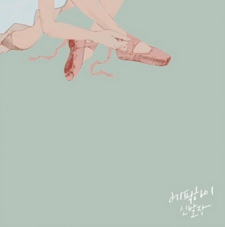

Epil High
sleepless in __________
9집 WE'VE DONE SOMETHING WONDERFUL
8집 신발장
8집 신발장
8집 신발장
은 2014년 10월 21일에 발매된 에픽하이의 8집 앨범이다. 총 12곡이 수록되어있다.

막을 올리며
헤픈엔딩
RICH
스포일러
부르즈 할리파
또 싸워
AMOR FATI
BORN HATER
LESSON 5(타임라인)
LIFE IS GOOD
EYES NOSE LIPS
신발장